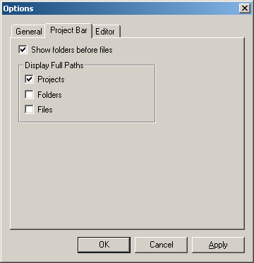

Project Manager Options
- Show folders before files - Determines which items to display first in the Project Tree.
- Display full paths for Projects - Check here if you want to show the full path of each project file in the Project Manager window.
- Display full paths for Folders - Check here if you want to show the full path of each folder in the Project Manager window.
- Display full paths for Files - Check here if you want to show the full path of each file in the Project Manager window.
Below is a screenshot of the Project Bar Tab in Options Dialog:
